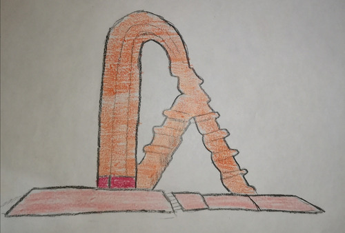

Puerta de Chihuahua
La Puerta de Chihuahua es una escultura urbana roja de 500 toneladas de acero y 43 metros de altura, aunque otras fuentes afirman que mide 46 metros. Se ubica en la ruta federal 45 norte, mejor conocida localmente como la carretera Chihuahua-Delicias o “la carretera rumbo a Delicias”, a la entrada sur de la ciudad de Chihuahua. Sus coordenadas son la latitud 28° 35' 33.8" (28.5927°) norte y la longitud 105° 57' 38.9" (105.9608°) oeste. Inaugurada en 1997, la Puerta de Chihuahua es la primera escultura creada por el reconocido escultor chihuahuense Enrique Carbajal, más conocido como Sebastián, en su estado natal.
Según Sebastián, el origen de esta obra parte del triángulo equilátero de acuerdo a la perspectiva de Kepler, que está relacionada con lo primitivo. Se piensa esta como un reloj de sol, ya que el artista pretende crear un recordatorio de lo mágico y tradicional del arte a partir de lo tradicional. Así también, representa dos fechas importantes para la cultura chihuahuense: su fundación y ritos solares tradicionales como el del equinoccio de primavera. Además, los enormes huecos tienen la intención de servir como marco para ver al Chihuahua contemporáneo con símbolos muy peculiares para los chihuahuenses. En una entrevista concedida a Ana Cruz, Sebastián dijo lo siguiente:
"Mi escultura La Puerta de Chihuahua me llena de orgullo porque los hace sentir y pensar en otras posibilidades de vida. Es, además de un señalamiento urbano, una inspiraciónque los hace sentir parte de un país que sí tiene esperanzas, de un mundo que tiene sentido. Es increíble todo lo que me han dicho mis paisanos sobre esta escultura, su sola presencia desde los aviones, cuando uno va llegando a la ciudad, te trasmite un sentimiento de grandeza, sientes que perteneces a un estado importante dentro de esta gran nación que es México."

La Puerta de Chihuahua es una de las esculturas más representativas de Sebastián porque tiene tres órdenes arquitectónicos:
- La plataforma piramidal simboliza el mestizaje chihuahuense, las pirámides y los asentamientos prehispánicos.
- La cascada de formas geométricas alude al caserío de los pueblos de Paquimé.
- El arco de medio punto abocinado, con una columna contrafuerte hace referencia a las primeras misiones españolas de la región.
Esta escultura se trasladó desarmada desde la Ciudad de México. Al inicio del viaje, cinco o seis patrullas detuvieron al escultor por presuntas violaciones al código de tránsito. Sebastián llamó inmediatamente a su amigo, el General Ramón Bueno, quien resolvió su problema. Por suerte, dos de los presentes eran paisanos del General, y después de una plática telefónica entre ellos, esas mismas patrullas terminaron escoltando a Carbajal hasta la salida de la carretera.
Además, en este monumento: “se han realizado tanto congregaciones políticas como misas para pedir a dios que llueva.”